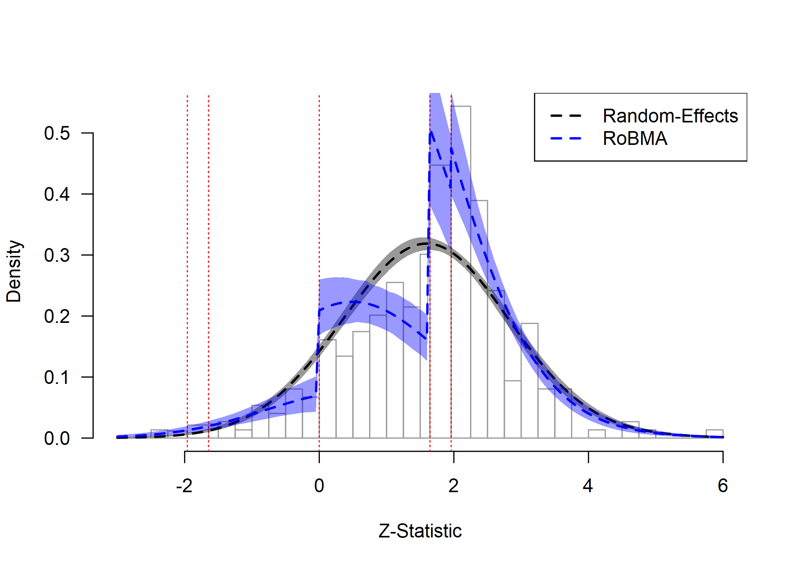
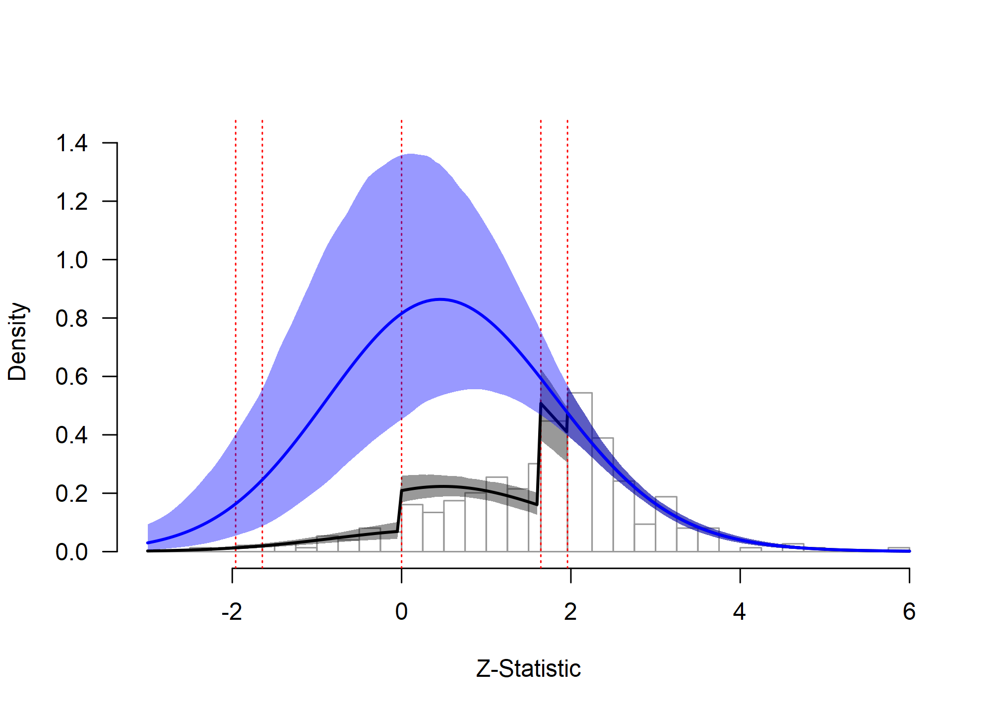
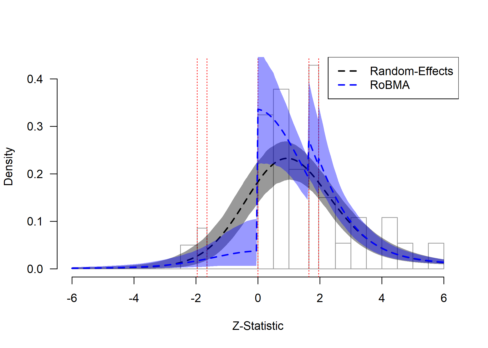
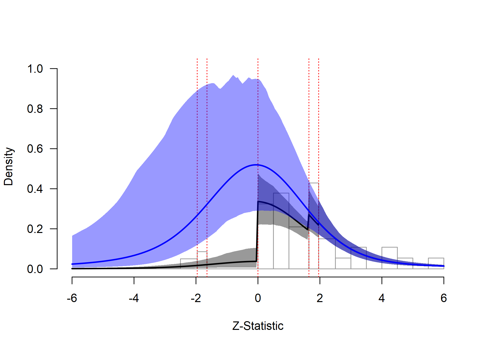
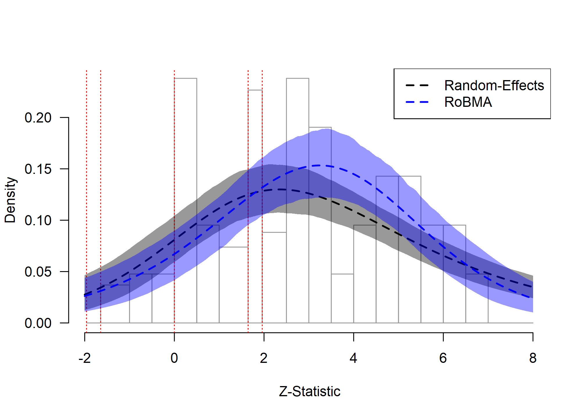
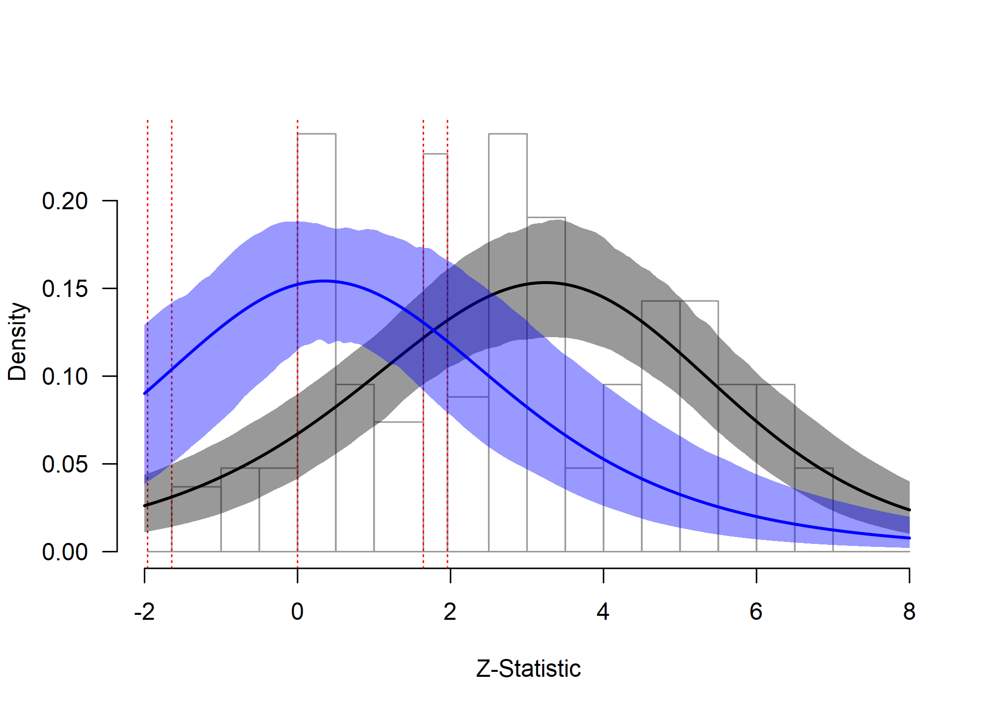
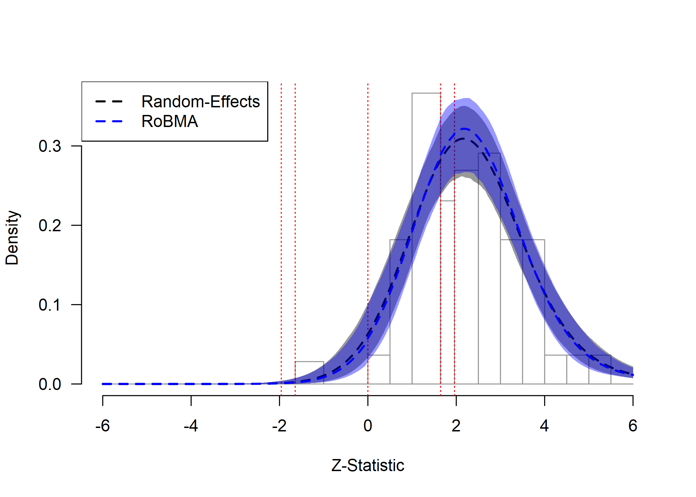
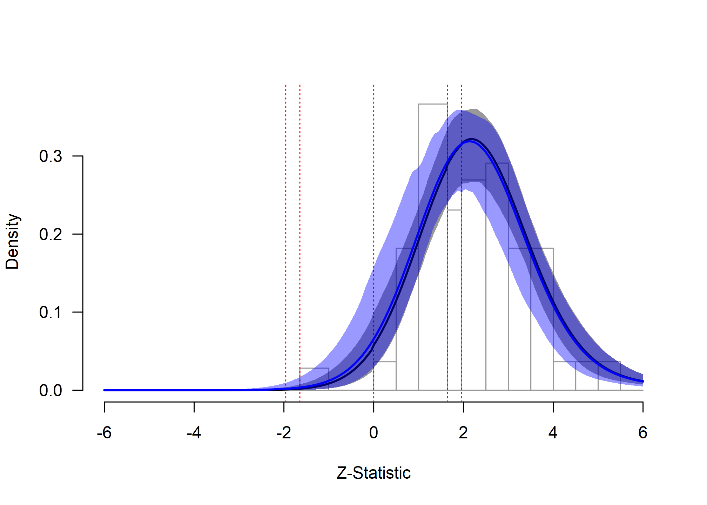

Zplot Publication-Bias Diagnostics
František Bartoš
8th of September 2025 (updated: 29th of April 2026)
Source:vignettes/36-zplot.Rmd
36-zplot.RmdThis vignette accompanies the manuscript “Zplot: A Visual Diagnostic for Publication Bias in Meta-Analysis” (Bartoš & Schimmack, 2025).
The manuscript provides the theoretical foundation and detailed
methodology for zplot diagnostics, while this vignette demonstrates
their practical implementation using the RoBMA R package
(Bartoš & Maier,
2020).
Zplots visually assess meta-analytic model fit, focusing on misfit due to publication bias (Bartoš & Schimmack, 2025). The methodology overlays model-implied posterior predictive distributions of z-statistics on the observed distribution of z-statistics (Gabry et al., 2019), allowing researchers to assess how well different meta-analytic models capture the patterns in their data. The approach builds on earlier work by Brunner & Schimmack (2020) for assessing the quality of research.
The zplot approach complements statistical tests of publication bias (such as inclusion Bayes factors) with intuitive visualizations that can highlight model misfit due to publication bias. The method also allows extrapolation to the pre-publication bias state, providing estimates of key metrics such as the expected discovery rate and the number of missing studies.
We illustrate the zplot diagnostics using four empirical examples from recent meta-analyses that exhibit different degrees of publication bias. The examples demonstrate how to interpret zplots and use them to guide model selection in meta-analytic practice. For details refer to the accompanying manuscript (Bartoš & Schimmack, 2025).
Getting Started
Before we start, we load the RoBMA R package:
The zplot workflow consists of the following steps:
- Fit meta-analytic models to your data using
brma()for random-effects models orRoBMA()for publication-bias-adjusted models (Bartoš et al., 2023; Maier et al., 2023). - Call
zplot()directly on a fitted model for a one-shot diagnostic plot, or convert viaas_zplot()when you want to overlay multiple models. - Generate histograms of observed z-statistics using
hist()on azplot_brmaobject. - Overlay model fits using
lines()to compare different models. - Use the visualization to supplement statistical model comparison.
brma() fits a single random-effects meta-analytic model,
while RoBMA() fits a Bayesian model-averaged ensemble that
includes publication-bias adjustment. The zplot diagnostics work with
fitted brma/RoBMA objects.
Applied Examples
We demonstrate the zplot diagnostics on four empirical meta-analyses that represent different publication-bias scenarios:
- Ease-of-retrieval effect in the few/many paradigm (Weingarten & Hutchinson, 2018): an example with extreme publication bias.
- Social comparison as behavior change technique (Hoppen et al., 2025): an example with strong publication bias.
- ChatGPT effects on learning performance (Wang & Fan, 2025): an example with moderate publication bias.
- Framing effects from Many Labs 2 (Klein et al., 2018): an example with no publication bias (registered replication reports).
For each example, we fit both a simple random-effects model using
brma() and a publication-bias-adjusted ensemble using
RoBMA() (Bartoš et al., 2023; Maier et al., 2023). We then use
zplots to compare how well each model captures the observed distribution
of z-statistics.
Example 1: Ease-of-Retrieval Effect in the Few/Many Paradigm
This example examines the ease-of-retrieval effect, a well-established phenomenon in cognitive psychology where the subjective difficulty of recalling information influences judgments more than the actual number of items recalled (schwarz1991ease?).
We analyze 298 estimates from 111 studies examining the ease-of-retrieval effect in the few/many standard paradigm in the proximal dataset collected by Weingarten and colleagues (Weingarten & Hutchinson, 2018). The original analysis reported a pooled effect size r = 0.25, 95% CI [0.22, 0.28]. When adjusted for publication bias using PET-PEESE, the effect was reduced but remained substantial at r = 0.19, 95% CI [0.15, 0.23].
Data and model fitting. We begin by loading the ease-of-retrieval dataset and examining its structure, focusing on studies using the standard paradigm in proximal dataset conditions:
data("Weingarten2018", package = "RoBMA")
Weingarten2018 <- Weingarten2018[Weingarten2018$standard_paradigm & Weingarten2018$proximal_dataset, ]
head(Weingarten2018)
#> r_xy N paper_id published USA number_of_few number_of_many episodic_memory standard_paradigm proximal_dataset r_xm r_my
#> 129 0.2921094 20.0 1 TRUE FALSE 6 12 TRUE TRUE TRUE 0.3232300 0.35
#> 130 0.2675424 20.0 1 TRUE FALSE 6 12 TRUE TRUE TRUE 0.3232300 0.66
#> 131 0.1741571 79.0 1 TRUE FALSE 6 12 TRUE TRUE TRUE 0.1879524 0.12
#> 132 0.2076078 79.0 1 TRUE FALSE 6 12 TRUE TRUE TRUE 0.1879524 0.32
#> 135 0.3333333 19.5 1 TRUE FALSE 6 12 TRUE TRUE TRUE 0.1566084 -0.03
#> 136 0.3855344 19.5 1 TRUE FALSE 6 12 TRUE TRUE TRUE 0.1566084 0.23The filtered dataset contains 298 effect size estimates (correlation
coefficients) and sample sizes. Since the effect size estimates are
nested within studies (indicated by the paper_id variable),
we specify a multilevel random-effects model using brma()
and a multilevel publication-bias-adjusted model using
RoBMA() (Bartoš et al., 2026). We use
metafor::escalc() to compute Fisher’s z effect sizes from
the correlation coefficients and sample sizes prior to fitting.
Weingarten2018_z <- metafor::escalc(
ri = r_xy, ni = round(N), measure = "ZCOR", data = Weingarten2018
)
fit_RE_Weingarten2018 <- brma(
yi = yi, vi = vi, measure = "ZCOR",
cluster = paper_id, data = Weingarten2018_z,
sample = 10000, burnin = 10000, adapt = 10000,
chains = 5, parallel = TRUE, seed = 1)
fit_RoBMA_Weingarten2018 <- RoBMA(
yi = yi, vi = vi, measure = "ZCOR",
cluster = paper_id, data = Weingarten2018_z,
sample = 10000, burnin = 10000, adapt = 10000,
chains = 5, parallel = TRUE, seed = 1)Model results. We examine the results from both
models using the summary() function.
summary(fit_RE_Weingarten2018)
#>
#> Bayesian Multilevel Random-Effects Model (k = 298, clusters = 111)
#>
#> Estimates
#> Mean SD 0.025 0.5 0.975 error(MCMC) error(MCMC)/SD ESS R-hat
#> mu 0.254 0.015 0.225 0.254 0.284 0.00018 0.012 6594 1.001
#> tau 0.122 0.013 0.097 0.121 0.149 0.00024 0.018 3102 1.001
#> rho 0.947 0.040 0.846 0.956 0.997 0.00037 0.009 11686 1.001
summary(fit_RoBMA_Weingarten2018)
#>
#> Robust Bayesian Model-Averaged Multilevel Random-Effects Model (k = 298, clusters = 111)
#>
#> Component Inclusion
#> Prior prob. Post. prob. Inclusion BF error%(Inclusion BF)
#> Effect 0.500 1.000 >49999.000 NA
#> Heterogeneity 0.500 1.000 >49999.000 NA
#> Publication Bias 0.500 1.000 >49999.000 NA
#>
#> Estimates
#> Mean SD 0.025 0.5 0.975 error(MCMC) error(MCMC)/SD ESS R-hat
#> mu 0.171 0.021 0.129 0.172 0.212 0.00042 0.020 2532 1.003
#> tau 0.130 0.015 0.102 0.129 0.161 0.00028 0.019 2855 1.001
#> rho 0.959 0.032 0.878 0.967 0.998 0.00037 0.011 7938 1.000
#>
#> Publication Bias
#> Mean SD 0.025 0.5 0.975 error(MCMC) error(MCMC)/SD ESS R-hat
#> omega[0,0.025] 1.000 0.000 1.000 1.000 1.000 NA NA NA NA
#> omega[0.025,0.05] 0.872 0.136 0.577 0.907 1.000 0.00371 0.027 1366 1.005
#> omega[0.05,0.5] 0.269 0.062 0.164 0.264 0.405 0.00091 0.015 4547 1.002
#> omega[0.5,0.95] 0.096 0.043 0.036 0.088 0.200 0.00065 0.015 4472 1.002
#> omega[0.95,0.975] 0.096 0.046 0.036 0.088 0.200 0.00069 0.015 4619 1.005
#> omega[0.975,1] 0.096 0.047 0.036 0.088 0.200 0.00071 0.015 4656 1.007
#> PET 0.000 0.000 0.000 0.000 0.000 0.00000 NA 0 NA
#> PEESE 0.000 0.000 0.000 0.000 0.000 0.00000 NA 0 NA
#> P-value intervals for publication bias weights omega correspond to one-sided p-values.The Bayesian multilevel random-effects model finds results similar to those reported in the original publication-bias-unadjusted analysis.
The RoBMA analysis reveals extreme evidence for publication bias. However, RoBMA still finds extreme evidence for the presence of an effect, with a substantially reduced but non-zero model-averaged effect size estimate.
Zplot diagnostics. We now generate zplots to assess
how well each model captures the observed distribution of z-statistics.
The hist() function creates a histogram of the observed
z-statistics, while lines() overlays the model-implied
posterior predictive distributions (Gabry et al., 2019). The
as_zplot() function transforms a fitted
brma/RoBMA object into a
zplot_brma object that hist(),
lines(), and plot() can consume:
hist(as_zplot(fit_RoBMA_Weingarten2018), from = -3, to = 6, by = 0.25)
lines(as_zplot(fit_RE_Weingarten2018), from = -3, to = 6, col = "black", lty = 2, lwd = 2)
lines(as_zplot(fit_RoBMA_Weingarten2018), from = -3, to = 6, col = "blue", lty = 2, lwd = 2)
legend(
"topright",
legend = c("Random-Effects", "RoBMA"),
col = c("black", "blue"),
lty = 2, lwd = 2)
Ease-of-Retrieval Effect: Model Fit Assessment
The zplot reveals clear evidence of extreme publication bias in the ease-of-retrieval literature. Two extreme discontinuities are visible in the observed distribution of z-statistics (gray bars):
- Marginal significance threshold (z ≈ 1.64). There is a sharp increase in the frequency of test statistics just above the threshold for marginal significance (α = 0.10).
- Zero threshold (z = 0). A weaker discontinuity occurs at zero, with additional suppression of studies reporting negative effects (z < 0).
The random-effects model (black dashed line) fails to capture these patterns. It systematically overestimates the number of negative results and non-significant positive results.
RoBMA (blue dashed line) captures both discontinuities and approximates the observed data much better. These results provide extreme evidence for the presence of publication bias and highlight the need to interpret the publication-bias-adjusted model.
Extrapolation to pre-publication bias. The package
also allows us to extrapolate what the distribution of z-statistics
might have looked like in the absence of publication bias. This is
achieved by calling the zplot() function (with the default
plot_extrapolation = TRUE argument), which builds the
diagnostic plot directly from a fitted model.
zplot(fit_RoBMA_Weingarten2018, from = -3, to = 6, by.hist = 0.25)
Ease-of-Retrieval Effect: Extrapolation Analysis
The extrapolated distribution (blue line) shows what we would expect to observe if studies were published regardless of their results. Comparing the fitted distribution (accounting for publication bias) with the extrapolated distribution reveals the extent of the bias. The large discrepancy between these distributions quantifies the substantial impact of publication bias in this literature.
Zplot summary metrics. This discrepancy can be
summarized with the additional statistics provided by the
summary() function applied to a zplot_brma
object.
summary(as_zplot(fit_RoBMA_Weingarten2018))
#>
#> Zplot Estimates:
#> Mean Median 0.025 0.975
#> EDR 0.186 0.185 0.142 0.238
#> Soric FDR 0.235 0.232 0.169 0.318
#> Missing N 574.352 536.603 282.444 1058.039
#> Estimated using 298 estimates, 134 significant (ODR = 0.45, 95% CI [0.39, 0.51]).The summary provides several key results. The observed discovery rate (ODR) substantially exceeds the expected discovery rate (EDR), indicating that many more significant results appear in the published literature than we would expect. The estimated number of missing studies suggests that a substantial number of non-significant or negative results may be absent from the published literature. The false discovery risk (FDR) provides an upper bound on the proportion of statistically significant results that may be false positives, though this risk remains moderate due to evidence for a genuine underlying effect despite the extreme publication bias.
Example 2: Social Comparison and Behavior Change
This example examines a meta-analysis of randomized controlled trials evaluating the efficacy of social comparison as a behavior change technique (Hoppen et al., 2025). The analysis includes 37 trials comparing social comparison interventions to passive controls across domains including climate-change mitigation, health, performance, and service outcomes.
Data and model fitting. Again, we begin by loading the social comparison dataset and examining its structure:
data("Hoppen2025", package = "RoBMA")
head(Hoppen2025)
#> d v outcome feedback_level social_comparison_type sessions sample_type sample_size country
#> 1 0.2206399 3.043547e-02 performance individual performance 2 other 179 Canada
#> 2 0.1284494 5.946958e-03 sustainability group sustainability 1 population-based 1035 USA
#> 3 0.1187558 7.707186e-04 sustainability group sustainability 2 population-based 21151 USA
#> 4 0.4400000 6.968339e-05 performance group safety 1 population-based 395204 China
#> 5 0.4198868 4.756183e-02 sustainability group monetary/sustainability 4 student 553 Taiwan
#> 6 0.0861236 2.219765e-02 sustainability group sustainability NA population-based 390 USAThe dataset contains effect sizes (d) and sampling
variances (v) from individual studies. We fit both a
random-effects model using brma() and a
publication-bias-adjusted model using RoBMA():
fit_RE_Hoppen2025 <- brma(
yi = d, sei = sqrt(v), measure = "SMD",
data = Hoppen2025,
sample = 10000, burnin = 5000, adapt = 5000,
chains = 5, parallel = TRUE, seed = 1)
fit_RoBMA_Hoppen2025 <- RoBMA(
yi = d, sei = sqrt(v), measure = "SMD",
data = Hoppen2025,
sample = 10000, burnin = 5000, adapt = 5000,
chains = 5, parallel = TRUE, seed = 1)Model results. We examine the key results from both models:
summary(fit_RE_Hoppen2025)
#>
#> Bayesian Random-Effects Model (k = 37)
#>
#> Estimates
#> Mean SD 0.025 0.5 0.975 error(MCMC) error(MCMC)/SD ESS R-hat
#> mu 0.170 0.034 0.105 0.170 0.238 0.00015 0.005 47805 1.000
#> tau 0.152 0.031 0.100 0.148 0.222 0.00020 0.006 24158 1.000The random-effects model estimates a positive effect size, suggesting a positive effect of social comparison interventions. However, this analysis does not account for potential publication bias.
summary(fit_RoBMA_Hoppen2025)
#>
#> Robust Bayesian Model-Averaged Random-Effects Model (k = 37)
#>
#> Component Inclusion
#> Prior prob. Post. prob. Inclusion BF error%(Inclusion BF)
#> Effect 0.500 0.157 0.186 2.944
#> Heterogeneity 0.500 1.000 >49999.000 NA
#> Publication Bias 0.500 0.998 405.504 18.778
#>
#> Estimates
#> Mean SD 0.025 0.5 0.975 error(MCMC) error(MCMC)/SD ESS R-hat
#> mu -0.012 0.064 -0.221 0.000 0.059 0.00089 0.014 5175 1.002
#> tau 0.210 0.045 0.139 0.204 0.317 0.00047 0.010 9340 1.001
#>
#> Publication Bias
#> Mean SD 0.025 0.5 0.975 error(MCMC) error(MCMC)/SD ESS R-hat
#> omega[0,0.025] 1.000 0.000 1.000 1.000 1.000 NA NA NA NA
#> omega[0.025,0.05] 0.947 0.102 0.638 1.000 1.000 0.00148 0.014 4888 1.001
#> omega[0.05,0.5] 0.686 0.180 0.330 0.695 0.983 0.00158 0.009 13233 1.001
#> omega[0.5,0.95] 0.077 0.087 0.010 0.060 0.211 0.00090 0.010 10067 1.003
#> omega[0.95,0.975] 0.077 0.087 0.010 0.060 0.211 0.00090 0.010 10066 1.003
#> omega[0.975,1] 0.077 0.087 0.010 0.060 0.211 0.00090 0.010 10056 1.003
#> PET 0.001 0.041 0.000 0.000 0.000 0.00023 0.006 35322 1.021
#> PEESE 0.005 0.148 0.000 0.000 0.000 0.00104 0.007 30038 1.036
#> P-value intervals for publication bias weights omega correspond to one-sided p-values.When accounting for the possibility of publication bias with RoBMA, we find extreme evidence for the presence of publication bias. Consequently, the effect size shrinks to essentially zero, with moderate evidence against the presence of an effect.
Zplot diagnostics.
hist(as_zplot(fit_RoBMA_Hoppen2025))
lines(as_zplot(fit_RE_Hoppen2025), col = "black", lty = 2, lwd = 2)
lines(as_zplot(fit_RoBMA_Hoppen2025), col = "blue", lty = 2, lwd = 2)
legend(
"topright",
legend = c("Random-Effects", "RoBMA"),
col = c("black", "blue"),
lty = 2, lwd = 2)
Social Comparison: Model Fit Assessment
The zplot highlights the clear evidence of publication bias in this dataset. We can observe pronounced discontinuities in the observed distribution (gray bars) at critical thresholds; particularly at the transition to marginal significance (z ≈ 1.64) and at zero (indicating selection against negative results).
The random-effects model (black dashed line) fails to capture these patterns, systematically overestimating the number of negative and non-significant results. In contrast, RoBMA (blue dashed line) successfully models both discontinuities, providing a markedly better fit to the observed data. This visual assessment aligns with the statistical evidence: RoBMA yields extreme evidence for publication bias and suggests that the unadjusted pooled effect is misleading.
Extrapolation to pre-publication bias. The package
also allows us to extrapolate what the distribution of z-statistics
might have looked like in the absence of publication bias. This is
achieved by either setting extrapolate = TRUE in the
lines() function, or calling the zplot()
function (with the default plot_extrapolation = TRUE
argument).
zplot(fit_RoBMA_Hoppen2025)
Social Comparison: Extrapolation Analysis
The extrapolated distribution (blue line) shows what we would expect to observe if studies were published regardless of their results. Comparing the fitted distribution (accounting for publication bias) with the extrapolated distribution reveals the extent of the bias. The large discrepancy between these distributions quantifies the substantial impact of publication bias in this literature, with implications for the estimated effect size and number of missing studies.
Zplot summary metrics. This discrepancy can be
summarized with the additional statistics provided by the
summary() function.
summary(as_zplot(fit_RoBMA_Hoppen2025))
#>
#> Zplot Estimates:
#> Mean Median 0.025 0.975
#> EDR 0.342 0.336 0.237 0.527
#> Soric FDR 0.107 0.104 0.047 0.169
#> Missing N 56.951 48.038 24.336 164.815
#> Estimated using 37 estimates, 13 significant (ODR = 0.35, 95% CI [0.21, 0.53]).The summary provides several results. The observed discovery rate (ODR, i.e., the observed proportion of statistically significant results) in the dataset matches the expected discovery rate (EDR) due to the one-sided selection for marginally significant results (instead of statistically significant results). The estimated number of missing studies suggests that a considerable number of non-significant or negative results may be absent from the published literature. The false discovery risk (FDR), which corresponds to the upper bound on the false positive rate, is not extremely inflated due to the possible small positive and negative effects under the moderate heterogeneity.
Example 3: ChatGPT and Learning Performance
This example examines the effectiveness of ChatGPT-based interventions on students’ learning performance (Wang & Fan, 2025). This meta-analysis includes 42 randomized controlled trials comparing experimental groups (using ChatGPT for tutoring or learning support) with control groups (without ChatGPT) on learning outcomes such as exam scores and final grades.
Data and model fitting. We follow the same procedure as in the previous example:
data("Wang2025", package = "RoBMA")
Wang2025 <- Wang2025[Wang2025$Learning_effect == "Learning performance", ]
head(Wang2025)
#> Learning_effect Author_year N_EG N_CG g Grade_level Type_of_course Duration Learning_model Role_of_ChatGPT Area_of_ChatGPT_application se
#> 1 Learning performance Emran et al. (2024) 34 34 2.730 College Language learning and academic writing >8 week Problem-based learning Intelligent learning tool Tutoring 0.3370820
#> 2 Learning performance Almohesh (2024) 75 75 1.117 Primary Skills and competencies development <=1 week Personalized learning Intelligent tutor Mixed 0.1755723
#> 3 Learning performance Avello-Martnez et al. (2023) 20 21 0.062 College Skills and competencies development <=1 week Personalized learning Intelligent learning tool Personalized recommendation 0.3125155
#> 4 Learning performance Boudouaia et al. (2024) 37 39 0.797 College Language learning and academic writing >8 week Reflective learning Intelligent tutor Assessment and evaluation 0.2384262
#> 5 Learning performance Bai? et al. (2023a) 12 12 0.993 College STEM and related courses <=1 week Problem-based learning Intelligent learning tool Tutoring 0.4326770
#> 6 Learning performance Chen and Chang (2024) 31 30 1.235 College STEM and related courses 1-4 week Mixed Intelligent learning tool Mixed 0.2794517
fit_RE_Wang2025 <- brma(
yi = g, sei = se, measure = "SMD",
data = Wang2025,
sample = 10000, burnin = 5000, adapt = 5000,
chains = 5, parallel = TRUE, seed = 1)
fit_RoBMA_Wang2025 <- RoBMA(
yi = g, sei = se, measure = "SMD",
data = Wang2025,
sample = 10000, burnin = 5000, adapt = 5000,
chains = 5, parallel = TRUE, seed = 1)Zplot diagnostics.
hist(as_zplot(fit_RoBMA_Wang2025), from = -2, to = 8)
lines(as_zplot(fit_RE_Wang2025), col = "black", lty = 2, lwd = 2, from = -2, to = 8)
lines(as_zplot(fit_RoBMA_Wang2025), col = "blue", lty = 2, lwd = 2, from = -2, to = 8)
legend(
"topright",
legend = c("Random-Effects", "RoBMA"),
col = c("black", "blue"),
lty = 2, lwd = 2)
ChatGPT: Model Fit Assessment
The zplot for the ChatGPT data shows a different pattern than the extreme publication bias observed in the social comparison example. While we do not see strong selection at conventional significance thresholds, there is a moderate discontinuity at the transition to non-conforming results (z = 0), suggesting some degree of selection against negative findings.
The random-effects model (black dashed line) provides a better fit to the data than in the previous example; however, RoBMA (blue dashed line) captures the discontinuity at zero slightly better. This visual pattern corresponds to moderate statistical evidence for publication bias, highlighting a case where both models might be considered, though the RoBMA model incorporates the uncertainty about the best model and provides a more complete account of the data patterns.
Extrapolation to pre-publication bias. We can examine the extrapolation to assess the impact of publication bias:
zplot(fit_RoBMA_Wang2025, from = -2, to = 8)
ChatGPT: Extrapolation Analysis
The extrapolated distribution (blue line) shows a more modest difference between the fitted and extrapolated distributions compared to the extreme bias example, reflecting the moderate degree of publication bias in this literature.
Model results. To quantify these visual patterns, we examine the model summaries:
summary(fit_RE_Wang2025)
#>
#> Bayesian Random-Effects Model (k = 42)
#>
#> Estimates
#> Mean SD 0.025 0.5 0.975 error(MCMC) error(MCMC)/SD ESS R-hat
#> mu 0.829 0.121 0.592 0.828 1.070 0.00054 0.004 49613 1.000
#> tau 0.736 0.095 0.567 0.729 0.938 0.00057 0.006 27589 1.000
summary(fit_RoBMA_Wang2025)
#>
#> Robust Bayesian Model-Averaged Random-Effects Model (k = 42)
#>
#> Component Inclusion
#> Prior prob. Post. prob. Inclusion BF error%(Inclusion BF)
#> Effect 0.500 0.512 1.049 3.371
#> Heterogeneity 0.500 1.000 >49999.000 NA
#> Publication Bias 0.500 1.000 2630.579 30.943
#> Bayes factor MC error for bias is based on only 19 posterior samples from the less frequent model.
#>
#> Estimates
#> Mean SD 0.025 0.5 0.975 error(MCMC) error(MCMC)/SD ESS R-hat
#> mu 0.122 0.209 -0.256 0.000 0.561 0.00463 0.022 2107 1.004
#> tau 0.612 0.086 0.461 0.607 0.796 0.00055 0.006 24232 1.000
#>
#> Publication Bias
#> Mean SD 0.025 0.5 0.975 error(MCMC) error(MCMC)/SD ESS R-hat
#> omega[0,0.025] 1.000 0.000 1.000 1.000 1.000 NA NA NA NA
#> omega[0.025,0.05] 1.000 0.003 1.000 1.000 1.000 0.00002 0.005 34572 1.102
#> omega[0.05,0.5] 1.000 0.011 1.000 1.000 1.000 0.00009 0.008 31891 1.075
#> omega[0.5,0.95] 1.000 0.019 1.000 1.000 1.000 0.00016 0.008 31087 1.058
#> omega[0.95,0.975] 1.000 0.019 1.000 1.000 1.000 0.00016 0.008 31331 1.058
#> omega[0.975,1] 1.000 0.019 1.000 1.000 1.000 0.00016 0.008 31472 1.058
#> PET 1.227 1.637 0.000 0.000 4.150 0.04576 0.028 1279 1.009
#> PEESE 4.442 3.665 0.000 5.608 9.778 0.09328 0.025 1576 1.007
#> P-value intervals for publication bias weights omega correspond to one-sided p-values.The random-effects model yields a substantial positive effect size estimate, while the RoBMA model accounting for selection produces a more conservative estimate with a wider credible interval. Importantly, the results show an extreme degree of between-study heterogeneity that greatly complicates feasible implications and recommendations. This demonstrates the moderate nature of the publication bias, where the adjusted estimate is meaningfully smaller but not completely reduced. The Bayes factor for publication bias provides moderate evidence for publication bias, and the evidence for the effect becomes weak.
Zplot summary metrics. This moderate publication-bias pattern is reflected in the summary statistics,
summary(as_zplot(fit_RoBMA_Wang2025))
#>
#> Zplot Estimates:
#> Mean Median 0.025 0.975
#> EDR 0.472 0.470 0.368 0.595
#> Soric FDR 0.061 0.059 0.036 0.090
#> Missing N 0.042 0.000 0.000 0.000
#> Estimated using 42 estimates, 27 significant (ODR = 0.64, 95% CI [0.48, 0.78]).which show a moderate-to-high EDR and a small number of missing estimates.
Example 4: Framing Effects from Many Labs 2
Our final example analyzes registered replication reports of the classic framing effect on decision making (Tversky & Kahneman, 1981) conducted as part of the Many Labs 2 project (Klein et al., 2018). This dataset provides an ideal test case for zplot diagnostics because the pre-registered nature of these studies does not allow for publication bias. The analysis includes 55 effect size estimates that examine how framing influences decision-making preferences.
Data and model fitting.
data("ManyLabs16", package = "RoBMA")
head(ManyLabs16)
#> y se
#> 1 0.3507108 0.2198890
#> 2 0.1238568 0.1496303
#> 3 0.1752287 0.3055819
#> 4 0.5125227 0.2012544
#> 5 0.4573484 0.1505897
#> 6 0.6846411 0.1870689
fit_RE_ManyLabs16 <- brma(
yi = y, sei = se, measure = "SMD",
data = ManyLabs16,
sample = 10000, burnin = 5000, adapt = 5000,
chains = 5, parallel = TRUE, seed = 1)
fit_RoBMA_ManyLabs16 <- RoBMA(
yi = y, sei = se, measure = "SMD",
data = ManyLabs16,
sample = 10000, burnin = 5000, adapt = 5000,
chains = 5, parallel = TRUE, seed = 1)Zplot diagnostics.
hist(as_zplot(fit_RoBMA_ManyLabs16))
lines(as_zplot(fit_RE_ManyLabs16), col = "black", lty = 2, lwd = 2)
lines(as_zplot(fit_RoBMA_ManyLabs16), col = "blue", lty = 2, lwd = 2)
legend(
"topleft",
legend = c("Random-Effects", "RoBMA"),
col = c("black", "blue"),
lty = 2, lwd = 2)
Framing Effects: Model Fit Assessment
The zplot for the Many Labs 2 framing effects demonstrates what we expect to see in the absence of publication bias. The observed distribution of z-statistics (gray bars) appears smooth without sharp discontinuities at significance thresholds or at zero. Both the random-effects model (black dashed line) and RoBMA (blue dashed line) provide essentially identical fits to the data, with their posterior predictive distributions overlapping almost perfectly.
This close agreement between models indicates that either approach would be appropriate for these data. The absence of publication bias is further confirmed by the statistical evidence: RoBMA provides moderate evidence against publication bias, demonstrating how the method appropriately penalizes unnecessary model complexity when simpler models explain the data equally well.
Extrapolation to pre-publication bias. We can examine whether there would be any difference in the absence of publication bias:
zplot(fit_RoBMA_ManyLabs16)
Framing Effects: Extrapolation Analysis
The extrapolated distribution (blue line) shows virtually no difference between the fitted and extrapolated distributions, confirming that publication bias has minimal impact in this well-designed replication project. This example illustrates the ideal scenario where traditional meta-analytic approaches are fully justified.
Model results. The quantitative results confirm the visual impression:
Both models yield virtually identical effect size estimates. The Bayes factor for publication bias provides moderate evidence against the presence of publication bias, appropriately penalizing the more complex model when it offers no advantage. This demonstrates the method’s ability to distinguish between necessary and unnecessary model complexity.
Zplot summary metrics. The absence of publication bias is reflected in the publication-bias assessment statistics: a moderate EDR matching the ODR and no missing studies.
Conclusions
Zplots are an intuitive diagnostic tool for assessing publication
bias and model fit (Bartoš & Schimmack, 2025).
By visualizing the distribution of test statistics and comparing
observed patterns with model-implied expectations, researchers can make
more informed decisions about their analytic approach using the
RoBMA R package (Bartoš & Maier, 2020).
Zplot diagnostics are particularly informative when applied to moderate to large meta-analyses (typically >20-30 studies), where histogram patterns become interpretable. Publication bias and questionable research practices (QRPs) might produce similar patterns of results. The zplot diagnostics cannot distinguish between them; however, they might help in assessing whether the model approximates the observed data well. They are especially useful for model comparison scenarios when they provide a visual supplement to statistical tests like inclusion Bayes factors.
The following points are important for interpreting zplot diagnostics:
- Sharp drops in the observed distribution at z = 0, z = ±1.64, or z = ±1.96 suggest publication bias.
- Models whose posterior predictive distributions closely match the observed pattern should be preferred.
- Large differences between fitted and extrapolated distributions indicate substantial publication bias.
- Visual assessment should complement formal statistical tests.